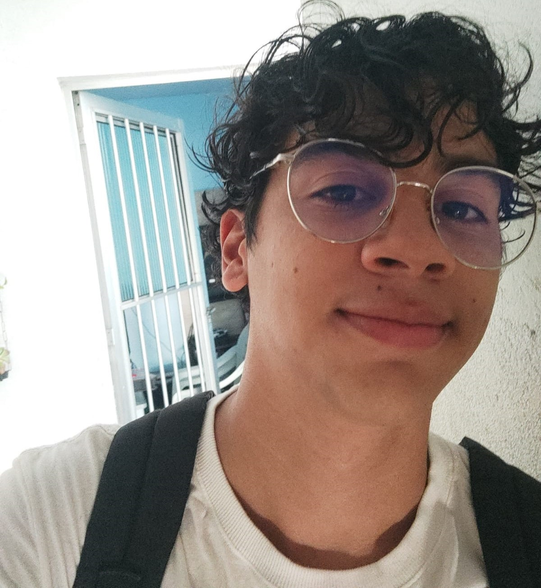

Nascido e criado em Jaboatão dos Guararapes, Pernambuco, Crystian da Paz Silva de 19 anos, estudante do IFPE - CAMPUS RECIFE - no curso integrado com o ensino médio em Eletrônica, engajado e participante de competições focadas em empreendedorismo e tecnologia, que se interessa por várias áreas, desde música, xadrez, desenho, programação, Design, tecnologia etc. Começou estudando Python e desde o começo se interessou pela programação. Agora, como estudante do PDA, ele busca mais conhecimento para se tornar fullstack e trabalhar e se consolidar na área.
Bio
